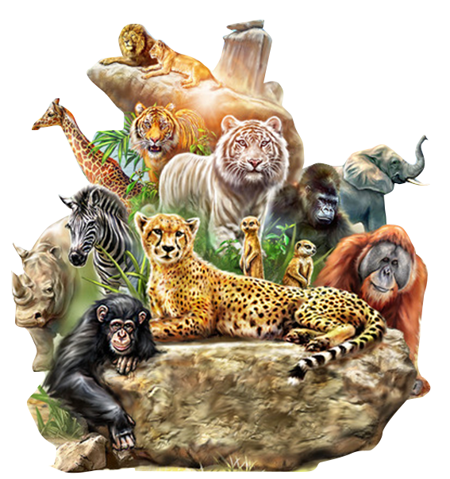
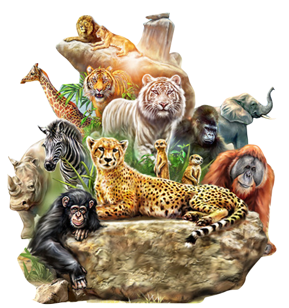

Biodiversity conservation is the protection and management of biodiversity to obtain resources for sustainable development.
-->Biodiversity conservation has three main objectives:
- To preserve the diversity of species.
- Sustainable utilization of species and ecosystem.
- maintain life-supporting systems and essential ecological processes.
METHODS OF CONSERVATION
Biodiversity refers to the variability of life on earth. It can be conserved in the following ways:
- In-situ Conservation
- Ex-situ Conservation
In-situ Conservation
In-situ conservation of biodiversity is the conservation of species within their natural habitat. In this method, the natural ecosystem is maintained and protected.
The in-situ conservation has several advantages. Following are the important advantages of in-situ conservation:
- It is a cost-effective and convenient method of conserving biodiversity.
- A large number of living organisms can be conserved simultaneously.
- the organisms are in a natural ecosystem, they can evolve better and can easily adjust to different environmental conditions.
- Certain protected areas where in-situ conservation takes place include national parks, wildlife sanctuaries and biosphere reserves.
National Parks
These are small reserves maintained by the government. Its boundaries are well demarcated and human activities such as grazing, forestry, habitat and cultivation are prohibited. For eg., Kanha National Park, and Bandipur National Park.
Wildlife Sanctuaries
These are the regions where only wild animals are found. Human activities such as timber harvesting, cultivation, collection of woods and other forest products are allowed here as long as they do not interfere with the conservation project. Also, tourists visit these places for recreation.
Biosphere Reserves
Biosphere reserves are multi-purpose protected areas where the wildlife, traditional lifestyle of the inhabitants and domesticated plants and animals are protected. Tourist and research activities are permitted here.
Ex-situ Conservation
Ex-situ conservation of biodiversity involves the breeding and maintenance of endangered species in artificial ecosystems such as zoos, nurseries, botanical gardens, gene banks, etc. There is less competition for food, water and space among the organisms.
Ex-situ conservation has the following advantages:
- The animals are provided with a longer time and breeding activity.
- The species bred in captivity can be reintroduced in the wild.
- Genetic techniques can be used for the preservation of endangered species.
 
